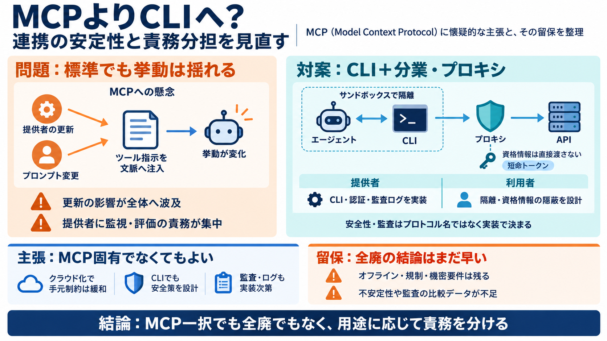

MCP vs. CLI for AI agents: How to choose the right tool transport (2026)
### Is MCP more secure than CLI? Not inherently. CLI has decades of OS-level security primitives (permissions, ACLs, sa…

MCP（Model Context Protocol）を廃止しつつあるべき代替として、成熟した連携は「よく作られたCLI＋分業・プロキシ」で統合できる、という主張への返答です。
MCPは「標準プロトコル」ですが、MCPサーバーのツール指示がエージェントのコンテキストへ注入されるため、更新の差分が挙動を揺らす可能性があります。
MCPはツール連携を“契約”のように見せますが、実際は指示がその場の文脈へ入るため、双方の更新で「同じはずの挙動」がズレ得ます。
多い反論は、オンデバイス制約・設定の継続・セキュリティ・監査・ログ・トークン消費です。筆者は「問題は理解するが、恒久的にMCPを残すほど致命的ではない」と位置づけます。
クラウド主体のエージェント基盤が増えれば、「オンデバイスでREPL/シェルが必要→MCP必須」という必然性は薄れうる、という見立てです。
MCPだから安全/危険が決まるわけではなく、認証は実装責任です。CLIでも同等に設計できる、という立て付けになります。
監査・観測（audit/logging）の優位性は「MCP特有」とは見えにくく、APIやMCPサービス提供者が担うべき責務として再整理しています。
対案は「MCP終了」ではなく、提供者がMCPサーバーではなくCLIを提供し、監査・観測・アクセス制御・短命トークンなどの“共通の工学的手当て”を施す方向です。
利用者は、資格情報をエージェントに直接渡さず“資格情報サロゲート（credential surrogate）”を使うべきで、さらにOSレベルのプロキシ機構の普及を期待します。
MCPでは提供者が、モニタリング／評価／モデル更新への追随といった“重い責務”を背負いやすくなる、という点が問題だとされます。
筆者の方向性（MCP一辺倒ではなく、CLI＋分業・プロキシで安全に組む）は魅力的です。ただし「オンデバイス否定」「監査比較」「MCP固有の不安定性」の根拠は追加データが不足しています。
本デッキは、提示された入力文（MCP／CLI／反論と再反論の要旨）に基づく圧縮まとめです。追加の検証観点として、用途別（オンデバイス/クラウド）、規制要件、監査要件、失敗時の再試行コストを並べて比較するのが有効です。
### Is MCP more secure than CLI? Not inherently. CLI has decades of OS-level security primitives (permissions, ACLs, sa…
No. MCP is too new (late 2024 onward). Models don’t know MCP schemas. That’s why you must inject them into the context w…
### Description 249 views Posted: 2026-03-11 MCP vs Skills. For the past year, the industry has been obsessed with the M…
on MCP, the event-driven pipeline on REST. Either way the credential problem is the same, and that is the part that need…
A coding agent is a program that reads untrusted input (a repository, an issue, a web page, an MCP tool response) and th…